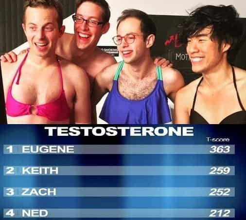

Jared is a middle-aged guy full of old-man wisdom. He's best described as a gentlemen scholar and a man among men. You can read his writing at his site: Legends of Men


It seems pretty obvious to red pill men that women are increasingly taking on more traditionally masculine sex roles. They delay having children to climb the corporate ladder. They delay marriage to be promiscuous. But while women are behaving more like traditional men, men are behaving more like traditional women. Here are five ways they do that.
It is masculine, and therefore good, to be strong. That’s undeniable. But how many guys are working out to be stronger and how many are working out to have six-pack abs? There comes a point where a man is not dieting and exercising to be more fit or more able to do physical activities.
At a certain point, usually around the time they start measuring their chicken breasts to help define their abs, they are only feeding their own vanity. Six-pack abs are not functional. In fact, most athletes do not even attempt to define their abs because it would inhibit their performance.
Similarly, men spend way too much time doing their hair before they go out or shopping for trendy clothes. Men used to spend some time on their appearance, but nothing like they do today. Men used to wait for their date downstairs while she would shout from the bathroom, “I’ll be down in a minute.” Twenty minutes later she’d come downstairs looking great. Now men are the ones spending so much time on their appearance hoping to attract a date.
And while you might try to justify that by saying it gets you laid, I refer to the next way men feminize themselves;
Men today spend way too much time trying to attract the opposite sex. For some, sex has become an obsession. Those guys who get ripped do get more fast sex with sluts. Check out this meme recently featured in a very entertaining article.

Yeah, men with six packs will bang the sluts, but look at how much time, effort, and willpower went into getting those abs. All those reps and all that dieting, for what? To bone some hoes and get a fleeting ego boost. Think of the opportunity cost of all those hours at the gym and all that effort on the diet.
Men used to just focus on being great men. Great women were attracted to great men. Those women would work on their appearance just to get a date with the great men, then they’d lay on the charm. A woman would laugh at a man’s bad jokes and pretend to care about football or work just to have a good date. Now it’s the men who spend hours looking pretty and have to pretend to like women’s jokes and pretend to care what girls think about politics just so they won’t pull out their phones on dates.
Great men used to be chased. Now potentially great men spend too much energy chasing women.
Men are becoming more feminine even on the biological level. Yes, I’m talking about testosterone. I won’t rehash good articles (like this one). Instead, I’ll just say that the fact of men’s lowering testosterone levels is probably a major contributor to any and all ways men take on more traditionally feminine roles.

Beta orbiting is downright girly. Have you ever seen a movie in which the popular girl walks around high school with all her uglier friends trailing behind? Beta orbiters are like those uglier girls. They want something from the pretty, popular girl but don’t have the balls to go for it directly. Nor do they have the confidence to pursue what they want without a handout. So they hang around the pretty, popular girl hoping that she will offer what the others want.
Men do this hoping the girl will offer up sex. Of course, that doesn’t happen. Men aren’t supposed to have enough free time to orbit a girl who’s just a friend. They’re supposed to be producing or bettering themselves. All that time spent orbiting a girl who wants to be just friends could be spent facing fears, getting rejected by women and realizing it’s not the end of the world. Then after going back to the drawing board and bettering themselves they could hold their heads high like men.
Instead, beta orbiters keep their faces down like they’re shy adolescent girls.
Men always have been and always will be producers. The key difference in sex roles is that men have the role of protectors and producers while women, children, and the elderly are consumers. Men still hold the protector roles but the producer role is up in the air. This is partly because women have decided to climb the corporate ladder but also because men have embraced consumer culture.

Look at how proud he is about his purchase
The men of today take way too much pride in having the latest gadget or a home theater system or getting a seat at some trendy tapas restaurant. Sixty years ago a woman would come back from the store and tell her husband, “Look what I got.” He’d look at it and say, “Why do you need that?” And she’d reply something like, “Because it goes this my earrings.” He’d roll his eyes and she’d walk away.
Now women show what they bought to their girlfriends who shout, “Ahhh I love it! You’re going to look so cute.” Conversely, men show some shirt they bought to their friends who say something like, “Bruh, you’re going to smash in that.”
Whereas traditional men bought something to signal their status to other men, today’s men buy stuff to help them get laid. Not only is that more traditionally feminine for the reasons stated above, it also makes them take way too much pride in being good shoppers when it works. Men aren’t supposed to be proud of how they consume, they’re supposed to take pride in how much they produce.
The larger trend is that men are defining themselves by how they perform with the opposite sex. That is precisely how traditional women defined themselves.
For more from Jared Trueheart on the roles of men and women in literature and film check out his writing at Legends of Men.
Read More: Study: Men Are Viewed As More Feminine If Their Wives Don’t Take Their Last Name